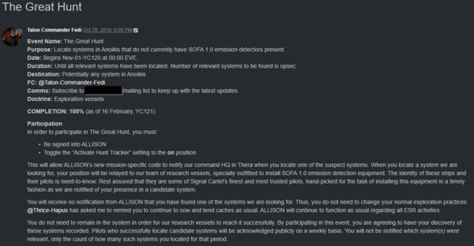

I can only give you my word, on my honor, (and believe me, like Signal Cartel’s reputation, mine is everything to me as well), up until those last 600 systems, I hadn’t utilized an alternate character or any other player to scout ahead for me during my journey. However, as you know for those last 600 systems, I did have the support and help of my 3 Explorer Mates, 100+ of my corp mates that participated in the Great Hunt, and an alternate character of mine. Even though it wasn’t a goal in the beginning of not losing a ship, by the time I got down to those last 600 and I still hadn’t lost a ship, it became a higher priority than actually finding the last systems. The pressure I put on myself at this point was unbelievable, I mean, to visit all the systems of New Eden was one thing, but to do it and not lose a ship? That would be epic and certainly something I couldn’t do alone at this point.
Talon Commander Fedi kicks off the Great Hunt (click to enlarge)
“You wanna play it soft. We’ll play it soft. You wanna play it hard. Let’s play it hard.” – Korben Dallas, Fifth Element
Now, that’s not to say I didn’t take any chances during those last 600 systems, I did. There were plenty of times I just went for them as they were found and I didn’t wait for one of my mates to secure them. Several times I ploughed through low sec on my way to a chain, not giving it a thought at all to use my alt to scout or hold for a mate to find a safer route. Once, I had completely forgotten that our corp was under a war dec and my alt (also in Signal Cartel) was caught on a trade hub gate camp and lost her ship (but not her pod! 😉 ) Whew! If I had been in one of my gutsy moods with Katia, that would have been it, game over!
Added later in the Great Hunt - Allison alert to Signaleer when finding a system
“Big ba-da boom.” – Leeloo, Fifth Element
Before the official start of the Great Hunt, I was struggling to get down to the last 600 systems. The target date was based on my ability to maintain an average of finding 3 systems per day, which was becoming more and more difficult as I continued to find systems I had already been to. Such is the difficulty of wormhole space and not knowing what system was on the other side of the hole you had just scanned down. So, I was having to increase the amount of my daily playtime to scan down more systems in order to find the minimum number of previously unfound systems. Thankfully, working with AD Parrot, to test the new features that were being added to Allison to track the Great Hunt, he enabled her for a limited time in October so we could make sure it was working as intended. And Wow! Was it ever! In that limited trial, I hit 10 systems per day with ease which quickly made up the gap. With Allison’s feature enabled in a test mode, I was able to get down to the last 600 in a couple of weeks before the official kickoff, which gave me some time to take a break and get ready for the big push.
Allision alert to me when I verified a needed system
Firmly written into the “Vacant Spectrum” storyline as Chapter 5, The Great Hunt, our OPSEC team created an NPC by the name of Talon Commander Fedi to “lead” the efforts with a target start date of November 1st, 2018. I had something of an idea of what day one would look like, but even then, over the course of that first week in November, I was blown away by the shear numbers of systems that were found. I couldn’t keep up, many systems were missed completely as my Mates and I weren’t able to secure them fast enough before chains would break. That first day was a short session for me as it was a normal work day, but even still, I managed to visit 7 systems. Friday, November 2nd I had taken a vacation day so I could tackle this effort completely, and wow, 20 systems visited! Here’s how it ended up playing out:
November – 341 systems visited (Average of 11/day)
December – 187 ( 6/day)
January – 61 ( 2/day)
February – 10 (.7/day) (Through February 15th, half of the month)
Officially, Chapter 5, The Great Hunt was over, but there was still 1 system left for me to get and that was the Drifter system of Redoubt. Was this on purpose? You bet it was. 😉 For the last system, I wanted to include my corp by inviting them along (still not knowing what it was truly all about) on a fleet. When thinking about what would be easy for a fleet to get to yet still be a wormhole system that I needed, we knew one of the Drifter holes would be ideal. Each one has a bunch of connections to all areas of space, we knew it would be easy to find one when we needed it from High Sec space, so no wormhole chains would have to be navigated with fear of connections closing. The connections to them are via beacons and don’t have to be scanned down, so from a High Sec system it’s as easy as right-click and jump, ideal for even our inexperienced members to come along. It would be a treat for those who’ve not been to one before and do some sight seeing as well by visiting the Sisters Fleet while there. Best of all, we could schedule the fleet any time we wanted.
The Great Fleet. We scheduled the fleet for March 9th which gave me some much-needed time off after that hectic 3-and-a-half-month marathon. During that time a lot of work behind the scenes was going on to make sure we could pull it off successfully, from trying to schedule the best time for folks to be able to make it if they wanted and adding two more corp mates to the event team.
First up, I feel so very lucky to have Theana Gaterau as the Great Fleet FC. She absolutely rocks and I hope she has forgiven me for my chattiness after the Big Reveal. She’s a wonderful FC, taking corp fleets out all the time that are great for first timers and veterans alike. I had the pleasure of being in fleet with her for the first time during our 4th Signal Cartel Birthday fleet and it was her first time to FC a hugs fleet too, what great fun! She did a great job and I knew I wanted her for the Great Hunt Fleet, so huge thanks for accepting and making the fleet an enjoyable experience for all involved.
Last, but certainly not least, Razorien was our official fleet photographer. If you’re not aware of Razorien’s work, then you’ve certainly been hiding under an asteroid. What an amazing and talented photographer he is and super glad he accepted the offer to be the one to take pictures during the fleet. He certainly didn’t disappoint as you can see from the album of the fleet which you can see here as well as the Banner and Trailer of this blog post. Thanks so much!
By the time the date rolled up, my fears of getting caught and popped increased until I lost my nerve to go with the fleet, but I think it was for the best and I loved the way it played out anyway. An hour before fleet time, my Mates secured Redoubt and I joined them for a mini celebration. That was it, my last system! I was done, but it wasn’t official yet, we wanted to have the Big Reveal of what it was actually all about during the Great Fleet. So, we were still rolling with the storyline and as the story went, our fleet was a diversion for something else going on. I took my other Signal Cartel alt character along with the fleet which you can listen to here. After visiting the Sisters Flotilla and firing off fireworks and hugs, we exited Redoubt and made for Saisio, my home system. While the fleet made their way there, I dropped and swapped out characters. Katia was waiting for them. At about the 28 minute time mark in the fleet recording, you can hear how the Great Reveal played out. Still gives me chills. 🙂
The Great Fleet and the Big Reveal
“BRAVO! Bravo! My compliments, little lady.” – Jean-Baptiste Emanuel Zorg, Fifth Element
So, that’s it, that’s how the final 600 systems played out. In total there was over 22 billion isk in payouts and 100+ challenge coins awarded for locating systems as part of the corp event. We had over 100 individual Signaleers participate in locating systems during the hunt and we had over 70 for the fleet, our largest fleet ever. For not knowing what was really going on, the corp really stepped up and came out for what I hope was a fun and memorable event for all. I know it was for me. Definitely something I’ll never forget. The great show of support afterwards truly has touched me and I can’t thank everyone enough for everything.
“I had a suspicion that locating Katia Sae’s systems was somehow related to the Great Hunt … When I saw the big lists of WHs I thought this may be the final push. Great job to all involved to set this up in such a fantastic way, such that 75 people could participate today, as well as however many flipped on the Great Hunt in Allison!” – Angel Lafisques
“I had no idea that what we were doing was somehow related to anything, and I’m proud that we did some good work to help get something as unbelievable as this done. I’d be used like this again in a heartbeat – thank you to all involved by making it so entertaining!” – Mako Koskanaiken
Great Fleet Celebrations by Razorien
Comments
"Loved reading this and reliving The Great Fleet…what a fun day! Thanks for sharing the whole story with the greater community!" - Mynxee
"This was the most epic thing in EVE EVER!" - J. Riley Castine
{kind=link}
{kind=link}
{kind=link}
{kind=link}
{kind=link}
{kind=link}
{kind=link}
{kind=link}